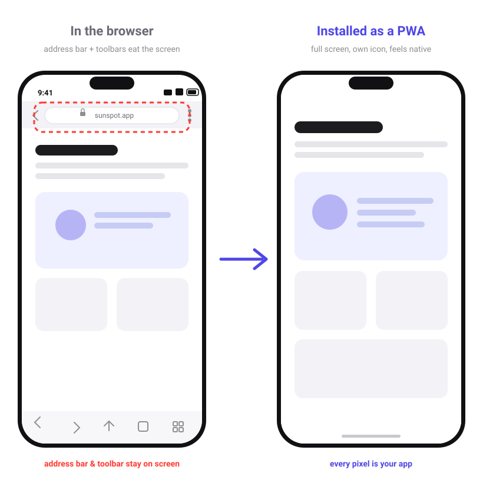
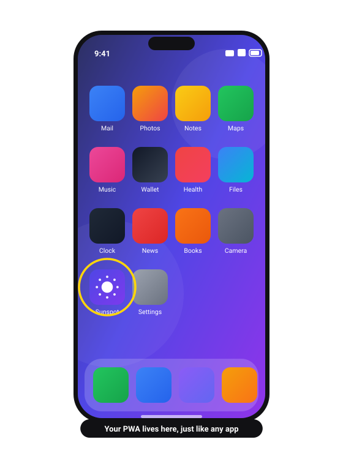
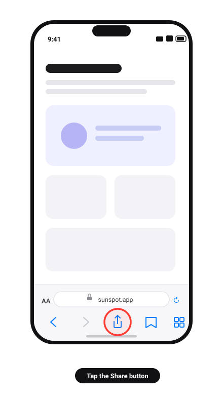
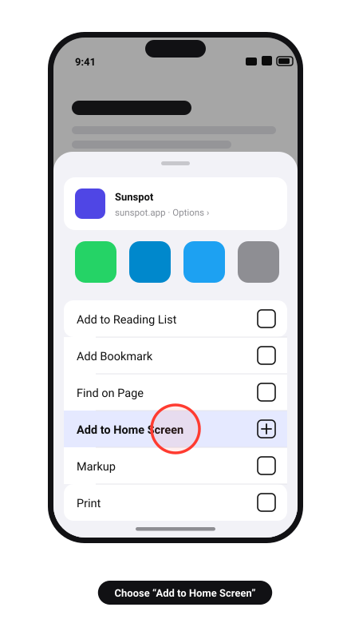
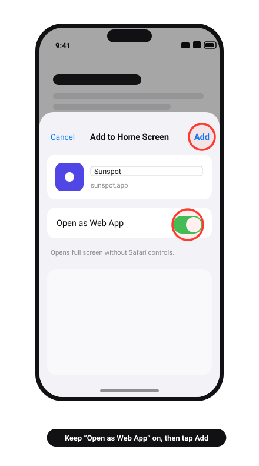
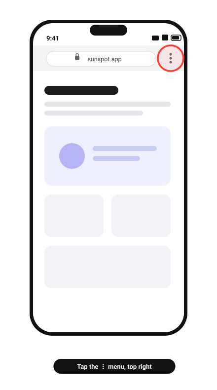
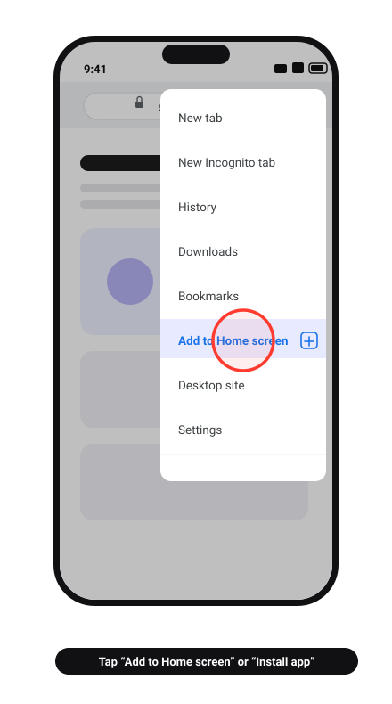
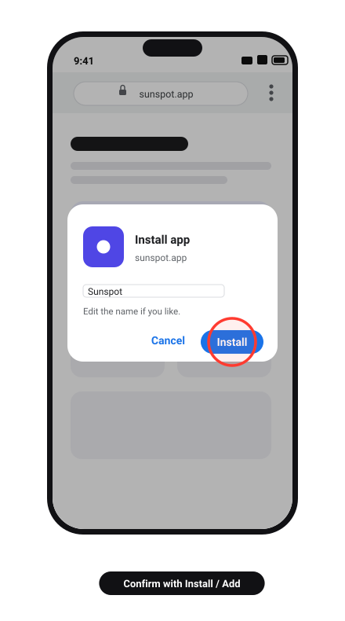

Quick Guide
Two taps and it opens like a real app — full screen, no address bar. Takes about 20 seconds.
A Progressive Web App is a website that behaves like an installed app once you add it to your home screen.
There’s nothing to download and no app store involved. You visit the site once, add it to your home screen, and from then on it gets its own icon and opens in its own window — without the browser’s address bar, tabs, or toolbar in the way.


Now pick your phone below ↓
Works in Safari, Chrome, and Edge on iOS 16.4 or later. Safari gives the most reliable result.
It’s the square with an arrow pointing up, in the toolbar at the bottom of Safari. On iPad it’s at the top right.

The share sheet opens. Scroll down past the app icons to the list of actions and tap Add to Home Screen.

You can shorten the name so it fits under the icon. On iOS 26 and later leave Open as Web App switched on — that’s what makes it launch full screen instead of as a Safari bookmark. Then tap Add at the top right.

The icon appears on the last page of your home screen (and in the App Library). Tap it and the app opens full screen.
Launch it from the icon from now on, not from Safari.
Shown in Chrome. Samsung Internet, Edge, Brave, and Firefox all work the same way — only the menu wording changes.
Tap the three dots (⋮) at the top right of Chrome. On some phones the menu is at the bottom right instead.

Depending on your Chrome version this reads Add to Home screen or Install app. Newer versions tuck it under Share or Save and share — look there if you don’t see it right away.

Edit the name if you want, then tap Install (or Add). If Android asks a second time whether to add the icon, confirm again.

The icon lands on your home screen and in the app drawer. It even shows up in Android’s app switcher as its own app.
Open it from the icon for the full-screen experience.
You’re almost certainly in an in-app browser rather than Safari. Tap the … or share icon and choose Open in Safari, then start again. Private Browsing tabs also hide the option in older iOS versions.
Chrome, Samsung Internet, and Edge each word it differently: Install app, Add page to → Home screen, or Add to phone. They all do the same thing.
On iOS, the Open as Web App toggle was probably switched off when you added it. Delete the icon and add it again with the toggle on. On Android, you may have created a plain bookmark shortcut rather than installing the app — try the menu again and look for Install app.
Press and hold the icon on your home screen and choose Delete / Uninstall, the same as any other app.